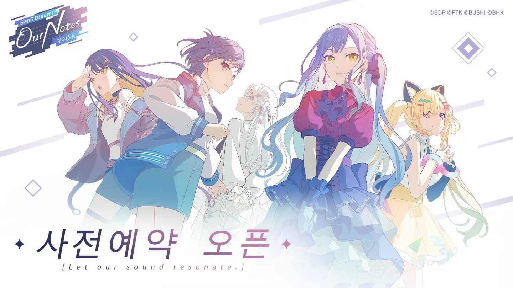
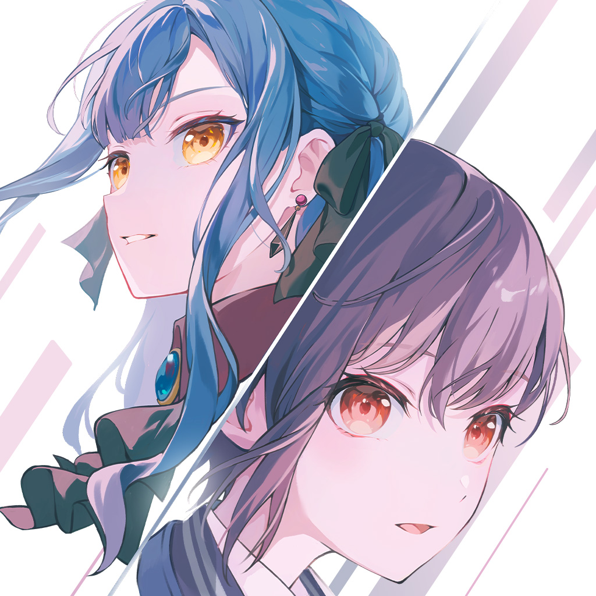
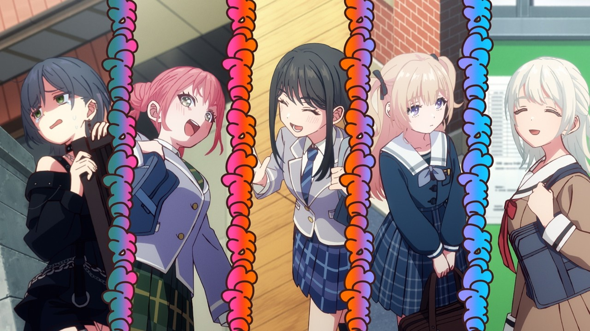
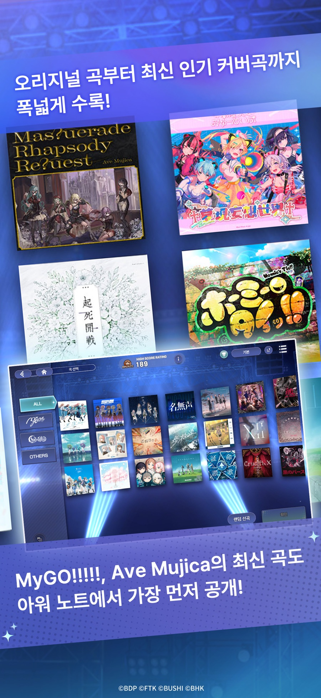
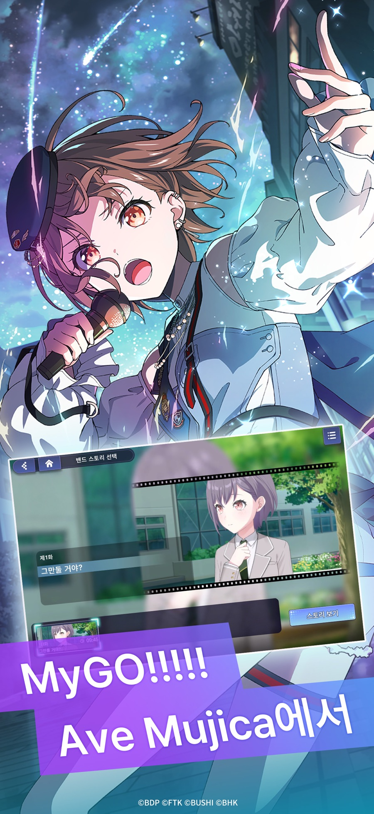

뱅드림아워노트 사전예약 50만달성보상 리듬게임초보 체크포인트
리듬게임 신작 찾으시는 분들 많으시죠. 저도 예전부터 뱅드림 시리즈를 살짝살짝 구경만 해봤던 입장이라, 이번에 새로 사전예약을 시작한 뱅드림! 아워 노트 소식 보고 바로 관심이 갔는데요. 정식 명칭은 'BanG Dream! Our Notes'이고, 빌리빌리게임에서 서비스하는 신작 모바일 리듬 어드벤처입니다.

사전예약 오픈 기념 공식 키비주얼이에요. 캐릭터들 라인업부터 딱 화사하죠.
이미지 출처: 인벤 웹진 · 네이버 본문엔 받아서 재업로드 권장
기존 뱅드림 IP 하면 걸즈 밴드 파티가 먼저 떠오르실 텐데, 이번 아워 노트는 마이고!!!!!(MyGO!!!!!)와 아베 무지카(Ave Mujica) 이야기를 기점으로 다섯 개 밴드의 서사가 교차하는 신작이라고 해요. 무겐다이 뮤타입 같은 기존 밴드에 더해, 신규 밴드인 millsage와 일가 Dumb Rock!까지 새로 합류한다고 하니 팬 입장에선 반가운 소식이더라고요. 앱스토어 소개 문구도 "격주 리듬 × 어드벤처로 새로운 이야기가 시작된다"고 짧고 굵게 정리돼 있어서, 리듬 파트뿐 아니라 스토리 비중도 꽤 신경 쓴 작품이라는 인상을 받았습니다.
사전예약 언제부터, 어디서 하나요?
사전예약은 6월 26일 특별 생방송과 함께 공개·오픈됐고, 글로벌 동시 사전예약으로 진행 중입니다. 방법은 두 갈래인데요, 공식 사전예약 페이지와 구글플레이·앱스토어 등 앱마켓 양쪽에서 모두 신청할 수 있고, 실제로 앱스토어에도 '뱅드림! 아워 노트'가 사전예약 상태로 등록돼 있는 걸 확인했어요. 다만 사전예약 마감 시점까지는 아직 공식적으로 확정된 게 없어서, 이 부분은 정확한 날짜가 나오는 대로 다시 알려드릴게요.🔍 사전예약 마감일 공식 확인

공식 사이트 대표 이미지인데, 두 캐릭터 표정 대비가 은근 매력적이에요.
이미지 출처: 뱅드림! 아워 노트 공식 사이트 · 네이버 본문엔 받아서 재업로드 권장
50만 달성 보상, 뭘 챙길 수 있나요?
다들 제일 궁금해하실 부분이죠. 사전예약 인원이 50만 명을 달성하면 모든 이용자에게 20회 뽑기 상당의 스타를 지급한다고 공식적으로 밝혔어요. 여기에 더해 공식 사전예약 페이지와 앱마켓 두 곳에서 모두 사전예약을 완료한 이용자는 별도 한정 추첨 이벤트에 참여할 자격도 주어진다고 하니, 기왕 할 거면 양쪽 다 챙겨두는 게 이득이겠더라고요. 아직 30만·40만 같은 중간 단계별 보상까지는 공개되지 않았는데, 추가 단계가 나오면 그때 또 업데이트해드릴게요.
| 항목 | 내용 |
|---|---|
| 정식 명칭 | 뱅드림! 아워 노트 (BanG Dream! Our Notes) |
| 퍼블리셔 | 빌리빌리게임 (BILIBILI HK LIMITED) |
| 장르 | 리듬 어드벤처 (격주 리듬 × 어드벤처) |
| 플랫폼 | iOS · Android (모바일) |
| 사전예약 시작 | 2026년 6월 26일 |
| 사전예약 마감 | 미정 (공식 미발표) |
| CBT 일정 | 2026년 8월 6일부터 (한국어·영어·중국어 지원) |
| 정식 출시 예정 | 2026년 12월 20일 (앱스토어 기준) |
| 50만 달성 보상 | 전원 20회 뽑기 상당 스타 지급 |
리듬게임 처음이어도 괜찮을까?
저처럼 리듬게임을 자주 안 해본 분들이 가장 걱정하는 게 '나 박자 못 맞추는데 괜찮나'일 텐데요, 아워 노트는 이 부분을 꽤 신경 쓴 티가 나요. 신규 시스템으로 어시스트 모드를 넣어서, 리듬게임이 익숙하지 않은 사람도 부담 없이 즐기면서 실력을 천천히 키워나갈 수 있게 만들었다고 합니다. 그리고 격주 라이브라는 새로운 리듬 파트도 도입됐는데, 콤보 수와 판정 정확도, 약간의 운 요소까지 섞여서 난이도에 재미를 더한 방식이라고 하네요. 최대 5인 협력 플레이도 지원해서 친구들이랑 같이 라이브 무대를 즐기는 느낌으로 할 수 있다는 것도 초보 입장에선 은근 진입장벽을 낮춰주는 요소더라고요.

앞으로 아워 노트에서 만나게 될 캐릭터들이에요. 교복 룩이 은근 친근하죠.
이미지 출처: 뱅드림! 아워 노트 공식 유튜브 · 네이버 본문엔 받아서 재업로드 권장
개인적으로는 어시스트 모드 + 5인 협력 조합이 리듬게임 입문 수요를 정확히 겨냥한 설계 같아서 눈에 띄었어요. 보통 리듬게임은 혼자 판정 스트레스 받다가 접는 경우가 많은데, 난이도를 완화해주는 모드가 기본으로 있으면 확실히 시작 문턱이 낮아지니까요. 여기에 하나 더 짚자면, 기존 뱅드림 리듬게임(걸즈 밴드 파티)이 5개 레인 노트 방식이었다면 아워 노트는 격주 라이브라는 새 리듬 파트를 앞세워 판정·콤보·운 요소를 섞은 방식으로 차별화를 뒀다는 점이에요. 같은 IP지만 플레이 감각 자체를 새로 짠 느낌이라, 예전 뱅드림 리듬게임을 해봤던 분들도 새롭게 접근할 수 있을 것 같더라고요.
곡 구성도 입문자 입장에서 반가운 부분인데요. 앱스토어 카테고리는 '음악'으로 분류돼 있고, 소개란을 보면 오리지널 곡부터 최신 인기 커버곡까지 폭넓게 수록된다고 나와 있어요. 특히 마이고!!!!!와 아베 무지카의 최신 곡도 아워 노트에서 가장 먼저 공개된다고 하니, 애니메이션을 즐겨 봤던 분들이라면 익숙한 곡으로 리듬게임을 시작할 수 있어 진입 장벽이 한층 낮아지겠더라고요.

곡 선택 화면이에요. 오리지널 곡에 커버곡까지 목록이 꽤 알차게 채워질 것 같죠.
이미지 출처: App Store · 뱅드림! 아워 노트 · 네이버 본문엔 받아서 재업로드 권장
애니 안 봤어도, 뱅드림 처음이어도 볼만할까?
저도 뱅드림 시리즈를 깊게 파본 건 아니라서 걱정했는데, 아워 노트는 마이고!!!!!·아베 무지카 이야기를 기점으로 새로 밴드들이 얽히는 구성이라 오히려 진입하기 좋은 타이밍인 것 같더라고요. 단순히 애니 내용을 그대로 옮긴 게 아니라 애니메이션 이후의 오리지널 스토리가 게임에서 새로 펼쳐진다고 하니, 원작을 이미 본 팬이든 이제 막 입문하는 사람이든 각자 재미를 찾을 여지가 있어 보였어요. 게임 안에는 밴드별로 스토리를 골라 감상하는 '밴드 스토리 선택' 화면도 마련돼 있어서, 리듬게임만 하는 게 아니라 좋아하는 밴드 이야기를 따라가는 재미도 챙길 수 있겠더라고요.

밴드 스토리 선택 화면이에요. 리듬 파트 말고 이야기로도 즐길 수 있는 구조더라고요.
이미지 출처: App Store · 뱅드림! 아워 노트 · 네이버 본문엔 받아서 재업로드 권장
다섯 밴드 서사가 교차한다는 설명을 보면, 기존 팬은 익숙한 밴드를 새 각도로 볼 수 있고 처음 접하는 사람은 신규 밴드 millsage·일가 Dumb Rock!부터 자연스럽게 알아가면 될 것 같아요. CBT가 8월 6일부터 진행되고 한국어를 지원한다고 하니, 정식 출시 전에 미리 감을 잡아보고 싶은 분들은 테스터 모집에도 관심 가져볼 만합니다.
✔ 뱅드림 아워 노트 같이 보기 좋은 내용
(같은 게임의 CBT 후기·직업 정보 등은 아직 발행 전이라 링크가 없어요. 다음 소식이 나오면 이어서 정리해드릴게요.)
정식 출시는 2026년 12월 20일로 예정돼 있고, 아직 몇 달 남은 만큼 사전예약 50만 달성 여부랑 CBT 반응을 지켜보면서 천천히 소식 챙겨봐도 좋을 것 같아요. 그사이 사전예약 인원 달성 단계가 추가되거나 마감일이 확정되면, 그것도 놓치지 않고 이어서 알려드릴게요. 리듬게임 입문 삼아 가볍게 시작해보고 싶으신 분들은 사전예약부터 걸어두시는 걸 추천드립니다.